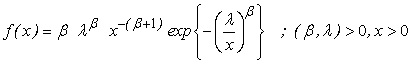

![[inv_weibull_ex0]](inv_weibull_ex0.bmp) Inverse Weibull Model
Inverse Weibull Model

model
{
for( i in 1 : N )
{
x[i] ~ dinv.weib(beta, lambda)
}
#Prior distributions of the model parameters
# Gamma Prior
beta ~ dgamma(0.001, 0.001)
lambda~ dgamma(0.001, 0.001)
}
The data set is taken from Murthy et al. (2004, pp. 119 ).
Murthy, D. N. P., Xie, M., Jiang, R. (2004). Weibull Models , Wiley-Interscience.
MLE's are beta = 3.888075, lambda = 0.803668
Data ( click to open )
Inits for chain 1 Inits for chain 2 ( click to open )
Results
![[inv_weibull_ex2]](inv_weibull_ex2.bmp)